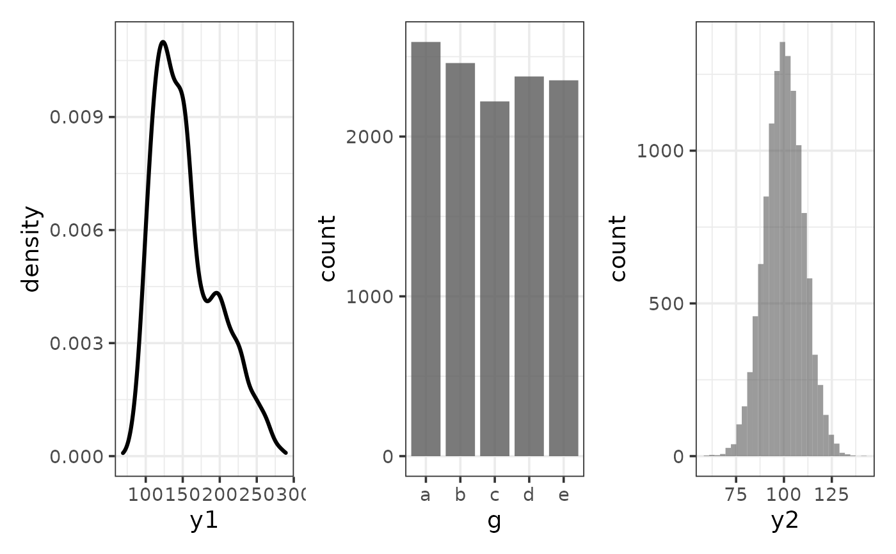

patchwork or
trelliscopejs packages.R/plot.R
plot_c.RdEasily combine an arbitrary number of plots into a multi-panel
display using either wrap_plots for a single
static display or trelliscope for an
interactive display. The static (patchwork) output option (trelliscope =
FALSE) is useful if you intend to produce a multi-panel graph for printing
or inclusion in a static document. The interactive (trelliscopejs) output
option (trelliscope = TRUE) is useful when you want to combine too many
plots to render them all legibly on the screen or if you want to combine
plotly graphs such as those generated by the "interactive" mode of other
elucidate plot_* functions.
plot_c(
...,
nrow = NULL,
ncol = NULL,
guides = c("collect", "auto", "keep"),
trelliscope = FALSE
)Any number of plots to combine into a multi-panel display. Also accepts a (single) list of plots. Set trelliscope = TRUE if any of the plots are plotly objects.
The number of rows to use when arranging plot panels.
The number of columns to use when arranging plot panels.
IF trelliscope = FALSE, this determines how
wrap_plots handles guides/legends across graphical
panels. If set to "collect" (default), redundant guides will be collected
such that only a single copy of each unique guide is shown. See
wrap_plots for details.
Set this to TRUE if you want to combine plots into an
interactive trelliscope display with
trelliscope, otherwise plots will be combined
into a static display using wrap_plots.
A static "patchwork" or dynamic "trelliscope" multi-panel graphical display depending upon the value of the "trelliscope" argument.
#create a few basic plots with elucidate::plot_* functions
p1 <- plot_density(pdata, y1)
p2 <- plot_bar(pdata, g)
p3 <- plot_histogram(pdata, y2)
#combine them into a static multi-panel display with plot_c()
plot_c(p1, p2, p3)

# \donttest{
#combine them into a dynamic multi-panel display
#by setting the trelliscope argument to TRUE
plot_c(p1, p2, p3, trelliscope = TRUE)
# }